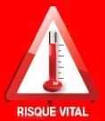
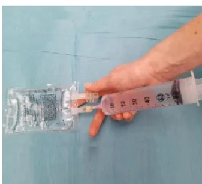
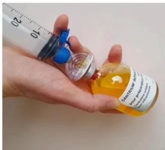
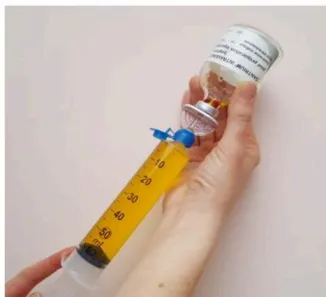
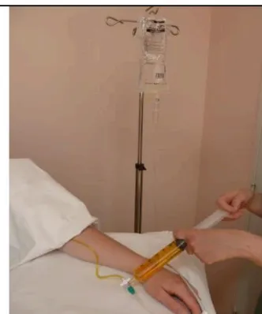
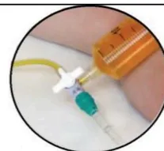

SEVORANE® (Sévoflurane), SUPRANE® (Desflurane), FORENE® (Isoflurane), FLUOTHANE® (Halothane)
PENTHROX® (méthoxyflurane), CELOCURINE® (Suxaméthonium, Succinylcholine)
Spasme des masséters
Hypercapnie (EtCO2)
Tachypnée
Acidose respiratoire
Tachycardie, arythmies
Rigidité
Hyperthermie, sueurs
Urines rouges (myoglobinurie)
Acidose mixte
Élévation des CPK
Marbrures
Coagulation intravasculaire
1/
Arrêter les agents volatils halogénés.
Hyperventiler en oxygène 100% (2 à 3 fois le volume minute utilisé avant la crise HM), en circuit ouvert.
2/
Demander du renfort.
3/
Relais par des anesthésiques non déclenchants : propofol, morphinique
Monitorer l'EtCO2 et la température centrale. Réaliser un gaz du sang artériel et veineux.
4 /
Dantrolène injectable
Flacons de 20 mg de poudre à diluer avec 60 mL d'eau stérile (eppi).
Injecter 2 à 3 mg/kg intraveineux direct, le plus vite possible (voir reconstitution du dantrolène au verso).
Maintenir le patient en ventilation contrôlée pendant la durée de l'effet myorelaxant du dantrolène (½ vie estimée à 10 heures).
5/
La réponse au dantrolène doit apparaître dans les minutes qui suivent l'injection avec régression des symptômes : hypercapnie, rigidité, hyperthermie.
Des doses supplémentaires de 1 mg/kg peuvent être nécessaires jusqu'à 10 mg/kg.
Poser un cathéter veineux central si nécessité de doses répétées.
La dépression myocardique induite par le dantrolène reste modérée.
Ne pas associer bloqueurs calciques IV et dantrolène.
6/
Le refroidissement par moyens physiques est justifié en cas d'hyperthermie importante et doit être arrêté dès que la température centrale est inférieure à 38°C.
7/
Surveiller : diurèse, température centrale, kaliémie, pH, CPK, myoglobine, coagulation.
8/
En cas d'hyperkaliémie, traiter par perfusion de glucose-insuline.
9/
En cas d'acidose métabolique grave (pH <7,2) injection IV de bicarbonate de sodium.
10/
Provoquer une diurèse supérieure à 1 mL/kg/h (pose de sonde vésicale) par remplissage vasculaire.
Chaque flacon de dantrolène contient 3 g de mannitol qui provoque une diurèse osmotique.
11/
Après la crise, surveiller le patient en réanimation pendant au moins 24 heures car recrudescence de la crise d'HM possible.
12/
Des doses supplémentaires de dantrolène IV en seringue électrique de 1mg/kg sur 4 heures sont recommandées avec réévaluation de l'évolution des signes d'HM.
Arrêt du dantrolène après rémission clinique des signes d'HM.
13/
Surveillance des taux de CPK et de potassium dans le sang et les urines pendant au moins 48 heures. Un dosage de CPK à 12h et à 24h qui reste normal est un argument important de diagnostic différentiel.
14/
Remise d'un document écrit au patient et à sa famille informant du diagnostic.
Prendre contact avec un centre de référence sur l'HM.
15/
En cas d'évolution défavorable, prélèvement sanguin de 10 mL sur tube EDTA en vue d'analyse génétique et prélèvement musculaire en vue d'examen anatomo-pathologique.
Stock Urgence Dantrolène conformément à la circulaire de 199 relative au traitement de la crise d'hyperthermie maligne peranesthésique (DGS/SQ2/ DH/99/631)
18 Flacons de 20 mg de Dantrolène IV présentés en kits contenant chacun :
1 flacon de dantrolène, 1 poche 100 mL d'eau stérile (eppi), 1 seringue 60 mL
1 aiguille 19G, 1 dispositif de transfert pourvu d'un filtre à particules et une
Prise d'air et filtre air (BBRAUN TD Minispike Filter V)
Le Dantrolène doit être dissous dans de l'eau stérile (eau pour préparation injectable)
Le Dantrolène dilué doit être conservé à température ambiante, protégé de la lumière et doit être utilisé dans les 6 heures.
36 flacons de 20 mg peuvent être nécessaires au traitement de la crise d'HM

1 - Matériel nécessaire

2 - Prélever 60 ml d'eau ppi

3 - Insérer le dispositif de transfert

4 - Injecter les 60 ml d'eau ppi

5 - Prélever les 60 ml de dantrolène dissous
6 - Secouer si présence de particules

7 - Injecter
La dose recommandée initiale est 2,5 mg/kg chez l'adulte et l'enfant.
Injecter les seringues par un robinet à trois voies sur une ligne de perfusion dédiée de sérum salé à 0,9% le plus rapidement possible.

Unité Hyperthermie Maligne
CHRU LILLE 59037 France
Tél : 03.20.44.62.68 ou 03.20.44.40.74
unite.hyperthermiemaligne@chru-lille.fr
Localisation du stock Urgence Dantrolène :
Numéro d'appel de la pharmacie pour kits Dantrolène complémentaires
Ce document est téléchargeable sur le site: www.sfar.org
Mise à jour 2018.